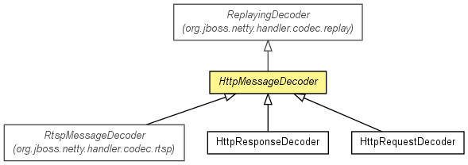

org.jboss.netty.handler.codec.http
Class HttpMessageDecoder
java.lang.Object
 org.jboss.netty.channel.SimpleChannelUpstreamHandler
org.jboss.netty.handler.codec.replay.ReplayingDecoder<HttpMessageDecoder.State>
org.jboss.netty.handler.codec.http.HttpMessageDecoder
org.jboss.netty.channel.SimpleChannelUpstreamHandler
org.jboss.netty.handler.codec.replay.ReplayingDecoder<HttpMessageDecoder.State>
org.jboss.netty.handler.codec.http.HttpMessageDecoder
- All Implemented Interfaces:
- ChannelHandler, ChannelUpstreamHandler
- Direct Known Subclasses:
- HttpRequestDecoder, HttpResponseDecoder, RtspMessageDecoder
public abstract class HttpMessageDecoder
- extends ReplayingDecoder<HttpMessageDecoder.State>

Decodes ChannelBuffers into HttpMessages and
HttpChunks.
Parameters that prevents excessive memory consumption
| Name | Meaning |
maxInitialLineLength |
The maximum length of the initial line
(e.g. "GET / HTTP/1.0" or "HTTP/1.0 200 OK")
If the length of the initial line exceeds this value, a
TooLongFrameException will be raised. |
maxHeaderSize |
The maximum length of all headers. If the sum of the length of each
header exceeds this value, a TooLongFrameException will be raised. |
maxChunkSize |
The maximum length of the content or each chunk. If the content length
(or the length of each chunk) exceeds this value, the content or chunk
will be split into multiple HttpChunks whose length is
maxChunkSize at maximum. |
Chunked Content
If the content of an HTTP message is greater than maxChunkSize or
the transfer encoding of the HTTP message is 'chunked', this decoder
generates one HttpMessage instance and its following
HttpChunks per single HTTP message to avoid excessive memory
consumption. For example, the following HTTP message:
GET / HTTP/1.1
Transfer-Encoding: chunked
1a
abcdefghijklmnopqrstuvwxyz
10
1234567890abcdef
0
Content-MD5: ...
[blank line]
triggers HttpRequestDecoder to generate 4 objects:
- An
HttpRequest whose chunked
property is true,
- The first
HttpChunk whose content is 'abcdefghijklmnopqrstuvwxyz',
- The second
HttpChunk whose content is '1234567890abcdef', and
- An
HttpChunkTrailer which marks the end of the content.
If you prefer not to handle HttpChunks by yourself for your
convenience, insert HttpChunkAggregator after this decoder in the
ChannelPipeline. However, please note that your server might not
be as memory efficient as without the aggregator.
Extensibility
Please note that this decoder is designed to be extended to implement
a protocol derived from HTTP, such as
RTSP and
ICAP.
To implement the decoder of such a derived protocol, extend this class and
implement all abstract methods properly.
- Version:
- $Rev: 2370 $, $Date: 2010-10-19 14:40:44 +0900 (Tue, 19 Oct 2010) $
- Author:
- The Netty Project, Andy Taylor (andy.taylor@jboss.org), Trustin Lee
|
Constructor Summary |
protected |
HttpMessageDecoder()
Creates a new instance with the default
maxInitialLineLength (4096}, maxHeaderSize (8192), and
maxChunkSize (8192). |
protected |
HttpMessageDecoder(int maxInitialLineLength,
int maxHeaderSize,
int maxChunkSize)
Creates a new instance with the specified parameters. |
| Methods inherited from class org.jboss.netty.handler.codec.replay.ReplayingDecoder |
actualReadableBytes, channelClosed, channelDisconnected, checkpoint, checkpoint, decodeLast, exceptionCaught, getState, internalBuffer, messageReceived, setState |
| Methods inherited from class java.lang.Object |
clone, equals, finalize, getClass, hashCode, notify, notifyAll, toString, wait, wait, wait |
HttpMessageDecoder
protected HttpMessageDecoder()
- Creates a new instance with the default
maxInitialLineLength (4096}, maxHeaderSize (8192), and
maxChunkSize (8192).
HttpMessageDecoder
protected HttpMessageDecoder(int maxInitialLineLength,
int maxHeaderSize,
int maxChunkSize)
- Creates a new instance with the specified parameters.
decode
protected Object decode(ChannelHandlerContext ctx,
Channel channel,
ChannelBuffer buffer,
HttpMessageDecoder.State state)
throws Exception
- Description copied from class:
ReplayingDecoder
- Decodes the received packets so far into a frame.
- Specified by:
decode in class ReplayingDecoder<HttpMessageDecoder.State>
- Parameters:
ctx - the context of this handlerchannel - the current channelbuffer - the cumulative buffer of received packets so far.
Note that the buffer might be empty, which means you
should not make an assumption that the buffer contains
at least one byte in your decoder implementation.state - the current decoder state (null if unused)
- Returns:
- the decoded frame
- Throws:
Exception
isContentAlwaysEmpty
protected boolean isContentAlwaysEmpty(HttpMessage msg)
isDecodingRequest
protected abstract boolean isDecodingRequest()
createMessage
protected abstract HttpMessage createMessage(String[] initialLine)
throws Exception
- Throws:
Exception
Copyright © 2008-2011 JBoss, a division of Red Hat, Inc.. All Rights Reserved.